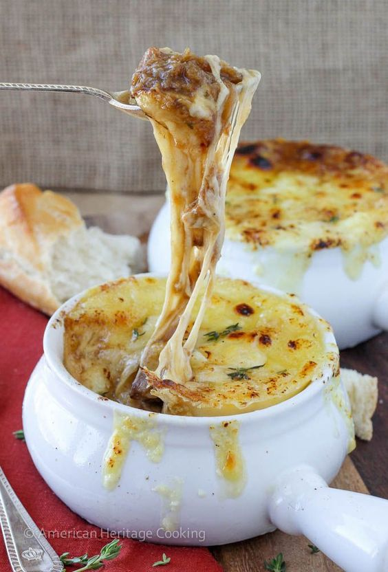

French Onion Soup

French Onion Soup is a soul-warming delight. Caramelized onions in a rich beef broth, topped with melted cheese and a toasted baguette, create a harmonious blend of savory flavors and comforting textures.
Ingredients:
- 4 large onions, thinly sliced
- 3 tablespoons unsalted butter
- 2 tablespoons olive oil
- 4 cups beef broth
- 2 cups chicken broth
- 1/2 cup dry white or red wine (optional)
- 1 teaspoon Worcestershire sauce
- 1 bay leaf
- Salt and black pepper to taste
- Baguette slices, toasted
- Gruyère or Swiss cheese, grated
Recipe:
- Heat the butter and olive oil in a large pot or Dutch oven over medium heat.
- Add the sliced onions and cook slowly, stirring occasionally, until they caramelize and turn a deep golden brown color, around 30-40 minutes.
- Once the onions are caramelized, pour in the wine (if using) to deglaze the pot, scraping up any browned bits from the bottom.
- Add the beef broth, chicken broth, Worcestershire sauce, bay leaf, salt, and pepper to the pot.
- Bring the soup to a simmer, then reduce the heat to low and let it simmer gently for about 20-30 minutes to allow the flavors to meld together.
- Taste and adjust seasoning if needed.
- Preheat the oven broiler. Ladle the soup into oven-safe bowls placed on a baking sheet.
- Top each bowl of soup with a toasted baguette slice and sprinkle generously with grated Gruyère or Swiss cheese.
- Place the baking sheet with the soup bowls under the broiler for 2-3 minutes, or until the cheese is melted and bubbly, watching carefully to prevent burning.
- Remove the soup bowls from the oven and allow the soup to cool for a minute before serving.
- Serve hot and enjoy the comforting goodness of homemade French Onion Soup!